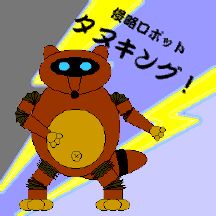

女神仮面ミーミル＆フレイヤ
〜超次元の女神たち〜
Ｂｙ ＫＥＢＯ
＜プロローグ＞
「おいおい・・・本当にこれ乗るの・・・」
「え、まさかゆー君・・・・こういうの苦手な人？」
優と文香は遊園地でデートしていた。遊園地に来るのははじめてのことである。優にしてみれば遊園地はやたらと金の掛かる場所なので今まで敬遠していたのだ。そして遊園地には、優にとって最も避けたい物がある。
二人は今まさにその優が避けたい物、ジェットコースターの改札口にいるのだった。
すでに優の顔は半分ひきつっている。
「・・・・そうだよ」
「うふ、ゆー君って以外とかわいい！」
文香は悪戯っぽい笑顔を浮かべると優の腕を引っ張った。
「え、あ、おい」
「すいません！二人分」
係員にプリペイド式の乗り物券を渡す文香。
「どうぞ」
係員の誘導で優は渋々と、文香は嬉々として乗り込む。
ジリジリジリジリジリジリ・・・・・ガックン
「ゆー君、大丈夫？」
「あ、あまり大丈夫じゃないんだけど・・・・」
カタン、カタン、カタン、カタン・・・
坂を上るコースター。すでに優の顔は蒼白である。やがてコースターは坂を上がりきった。
カタンカタンカタンカタカタカタガラガラガラガラガラ・・・・
「きゃああああ！」笑顔で嬌声をあげる文香。
「！！！！！！！」その隣で、真っ青な顔で声にならない悲鳴を上げる優。
ゴー！コースターが坂を下っていく。坂を下りきってトンネルに入ったところで優の意識は途切れた。
＜第一部：恐怖の魔神＞
カンコン・・・カンコン・・・カンコン・・・
遠くで鐘の音が聞こえている。優はゆっくりと目を開いた。
「お目覚めかな」
「え！？」
優は驚いてガバッと飛び起き辺りを見回す。どうやらベッドに寝かされていたらしい。
目に入ってきたのは三国志に出てきそうな文官風の格好をした白髪の小男だった。しかし風体とは裏腹に声は若々しく張りがある。
「あれ？あの？ここは一体・・・」
（確か文香と遊園地に来て、ジェットコースターに乗って・・・）
恐怖の感覚を思い出す優。どうやらそこで気を失ったらしいとようやく思い至る。しかしそこは見る限り医務室や救護室ではなさそうであったし、眼前の男も医者の格好にはとても見えない。もちろん文香の姿もない。
もしかしたらアトラクションの一部分なのかと思い、優は尋ねた。
「あの、連れがいたと思うんですが・・・・ん！？」
冷静になって聞いた自分の高い声に驚く優。そこまで言ってはじめて自分が女性化していることに気付いたのだ。慌てて身体を見回すが、一応服を着ているようなので安心する。
「ふむふむ、どうやら解っておらぬようだな。まあ仕方あるまい」
「え？」
「そなたはワシ、王室付き魔術師タックによって召還されたのだ」
「しょうかん？それを言うなら緊急システム発動依頼じゃ・・・」
よく見れば、男は多面体の水晶のような物を両手でしっかりと持っている。
「うーむ・・・しかしおかしなことよの。ワシは強力な女戦士を召還したはずであったのにそなたのようなごく普通の小娘が召還されるとは」
タックと名乗った男は、優の言葉を完全に無視して続けた。
「あのね、黙って聞いてれば好き放題言いやがって。ということは何か、あんたが魔法だか何だかで俺を喚びだしたわけ」少しムカッとして優が言い返す。
「そういうことだ。物分かりが良いのう」
「物分かりも何も・・・はっきり言うけど俺は男だ！」
「ふむ、これは驚きだ。もしかすると偉大な戦士が女性化されて送り込まれてしまったのか・・・」
「どうでもいいけど、だいたいここはどこなんだ？こっちは大事なデートの途中だったんだぞ」
「ここか？ここはミスリム王宮の一角、我がタックの居室だ」
「みすりむ？何処それ？」
その時、突然ドアが開いた。
「聞くだけ無駄よ。そのくそ爺、自分で何をしているのか解ってないんだから」
「文香！？」
部屋に入って来た女を見て驚く優。その女は、中世から近世の軍服姿をしてはいたが、その顔と姿は文香に間違いなかった。
「あら、どうして私の名前がわかったの？」
「いや、その・・・・知り合いにそっくりだったもので」
もはやタックなど眼中にない優。
「そう、それは奇遇ね。私はアヤカ。あなたと同じくこのくそ爺に呼び出されたのよ」
「そうくそ爺くそ爺と言わないでくれんかのう。ワシも仕事でしておる訳であるし」
「とにかくタック、女王陛下のお召しよ。その娘と一緒にいらっしゃい」
「女王陛下！？」驚く優。
「そう。いまタックが言ったとおり、あなたも私と同じようにこの国の危機を救うために呼び出されたのよ。たぶん女王様が詳しい話をなされると思うわ。さ、はやく着替えて」
「着替えって、ここで？」
「その格好で謁見する訳にはいかないわ。あ、大丈夫、タックは私がつまみ出すから」
言うなりアヤカはタックの首根っこを掴む。
「お、やめい！ここはワシの部屋じゃ！」抵抗するタック。しかしアヤカはまったくそれを気にせずタックを部屋の外に文字通りつまみ出した。
「これでよし、と」アヤカの合図とともに着替えを持った侍女が入ってくる。
「あの・・・結局どういうこと」優は着替えさせられながら尋ねる。
「そう、あなたも私もあのくそ爺の妙な力、いえ、たぶん水晶の力だと思うけど、によって呼び寄せられたのよ。私は本来こんな所にいるべきじゃないの。私は私で巨大な敵と戦っている最中だったわ。だから、はやく戻らなくてはいけないのよ」
「君の本来いる場所って？」
「地球、っていう所なんだけど、別の星なのか、それとも違う次元なのか、少なくとも私の知る世界にこんな原始的な所はないわ」
再び驚く優。
「地球！？こっちも地球から来たんだけど・・・・」
「え、地球のどこ？」
「日本」
「日本のどこ？」
優はゆっくりと日野神家の住所を告げた。すると今度はアヤカが驚きの声を上げた。
「あなた、もしかしてユウちゃん」
「そうだけど」
「うそ！でも変！ユウちゃんはそんな言葉遣いしないし、なんか顔も全然違う」
「あのさ、君の住所は」
「あ、そうね」
アヤカが自分の住所を告げる。
「あーあ、そりゃ間違いなく文香の住所だ。でもちょっと待てよ、この際だから言うけどたまたま今はこんな姿をしているけど私は本当は男なの」
「えー・・・・・？」
首をかしげる二人。
「わかった！」先に声を上げたのはアヤカの方だった。
「何？」
「昔、本で読んだことある。パラレルワールド」
「なるほど！それなら納得行く」優もその単語は知っていた。
「よかった」安堵のため息をつくアヤカ。
「何が」
「え！？」
顔を見合わせる二人。根本的な解決には何もならない。
「まあ、とにかく女王陛下の所へ行きましょう」
着替え終わった優を見てアヤカが言う。
「ちょっと、これ・・・・」
鏡を見てびっくりする優。アヤカが来ているのとほぼ同じ服だったが、自分が着るのと人が着るのとでは違う。
「・・・・オ＊カルでござーい、とでも言えっていうのかな？下着はともかく上の服全然あってない」
下着は女性物だったが、上着の軍服は男物だったのだ。優は自分が何なのかよくわからなくなってきた。
「この原始的な国で下着があるだけでも良かったと思わなきゃ。なかったらまともに動けやしないわよ。まあいいわ、とにかく早く行きましょう」
二人は部屋の外でおろおろしていたタックを従え女王の元に向かった。
「面を上げよ」
アヤカとともにゆっくりと顔を上げる優。その目が、前方にいる女王の姿に釘付けになる。
（うわおぉぉぉぉぉぉ・・・・）一瞬思考が停止する優。美しいとはこのことなのだろう。まさに咲き誇る花の如き豪華絢爛なドレスに釣り合う、いやそれさえも彼女にとっては不足であるかのような究極と言っていい程の美貌を湛えた女王ハナは、そのあまりにも美しく憂いに満ちた顔を優に向けた。
「名は、何と申す」
優はあまりの美しさに見とれてしまい、答える事すらできない。そんな優を、アヤカが肘でつついた。
「あ、ゆ、優、日野神 優と申します」
「そうか。優、この度は突然の呼び出し、申し訳なく思っています」
「い、いえいえそんな」女王にかけられた意外な言葉に優は思わず首を振った。
「すでに、タックから聞き及んでいようが」
もちろん一言も聞いてはいないがそんなことはどうでもいい。女王は説明をはじめた。
「三月前の事でした。このミスリムに突然悪魔がやってきたのです」
「悪魔？」
「そう。彼らは宇宙狸人ポン・ポコポンと悪の天才科学者チャン・チーチョンと名乗り、私の身柄を引き渡すように強く要求したのです」
「はあ」優はその美しい唇から漏れる冗談のような言葉にどういう反応をしていいか困った。
「もちろん私はそれを拒否しました。すると彼らは巨大な魔神を出現させこのミスリムに対する攻撃を始めたのです。この三月の戦いで、この国の軍隊の半分が失われました。このままではミスリムは滅んでしまう。かといって私の身柄を引き渡しても、この国は彼らの思い通りになるだけ。そこで私は、最後の手段としてタックに命じ、彼らに対抗しうる強力な女戦士を召還させたのです」
「ちょっと待って下さい、なんで女戦士なのですか」優は当然の疑問を口にした。
「それは・・・」タックが言いかけるのを制して女王が続けた。
「魔神は、恐ろしい魔力を持っています。その術に掛かった人間はすべて不思議な踊りを踊らずにはいられなくなり、しまいには姿までも踊り娘に変えられて連れ去られてしまうのです」
なんだそりゃ、と言いたいのを優は抑えた。
「それだけではありません。連れ去られた者達は彼らの手先となりその淫らな姿と踊りでで我が軍の男たちを魅惑し、仲間に引き入れてしまうのです。どんな屈強な戦士でも、あの淫らな踊りの虜になり、そのまま同じように踊り娘になってしまう・・・・」
女王の目から涙が落ちる。隣のアヤカももらい泣きしていた。
「して、私にどうしろと」優は、とりあえず場を収拾しようと考えた。
「お願いです。この国から、彼らを追い払い平和な日々を取り戻して下さい」
泣き崩れるハナ。侍女たちが助け起こす。その時、一人の使者が駆け込んできた。
驚く優。
「何事だ！」ハナは、今まで泣き崩れていたのがウソのようにきりっとした顔と毅然とした態度で使者を迎える。
「申し上げます。シホ付近にてズンカー将軍の軍勢がポンの軍勢とぶつかりましてございます」
「して、戦況は！」
「ただいまの所膠着しておりますが、魔神が現れれば我が軍は・・・」
アヤカが顔を上げる。
「陛下、しからばこれにて！」
「頼みましたぞ」
「優、行くわよ！」
「お、ちょっと待って！」
優は、慌ててアヤカを追いかけた。
「馬は、乗れるの？」
「たぶんね・・・・で結局さ」
「そういうこと。そのアホな宇宙人だか宇宙狸人が、この女王様の美貌に目を付けて、この星の文明が未発達なのをいいことに丸ごとハーレムにしようっていう算段」
「何て無茶苦茶な・・・」
「でも、女王様見てたらかわいそうでかわいそうで・・・」
「かわいそうとか、そういう問題じゃ・・・」
「そういう問題なの。とにかく、戻ろうにもあのくそ爺と女王様のご機嫌を取ってやらないと・・・・」
「なるほど。とにかく女王様のご希望を叶えてやらないことにはどうにもならないってか」
「そういうこと」
「でもそれまでこの妙な男装の女姿してるの酷だよ・・・・」
「我慢我慢、すぐ慣れるわよ」
「こんな物、慣れたくなーい！」
馬に飛び乗る二人。
「ついてきて！」アヤカが馬にムチを入れる。
ヒヒーン！いななく馬。二頭の馬は二人を乗せて走りだした。
「ガハハハ、ハーレムハーレム・・・・」
ポン・ポコポンは上機嫌だった。彼は、元はといえばバジャ星経済界の大物だったのだが、自分の利益と欲望を追求するあまりポン財閥最高指導者会議におけるクーデターによって代表の座を追われ、さらに在職中の非道な振る舞いが明るみとなったおかげで今となっては彼の唯一の部下であり相棒である天才科学者チャン・チーチョンとともにバジャ星をも追放されたのだ。
その長い放浪生活の末、彼はついにこの星を発見した。星の名さえまだない、文明もまだ原始的なこの星は、彼が余生の道楽を楽しむには理想的な星だった。さらにその星最大の国家の指導者は女王で、それもとびきりの美人ときている。彼がこの千載一遇のチャンスを逃すはずはなかった。そして彼は計画を実行に移した。
「ポンポコハーレム計画」と彼が勝手に名付けた計画は、チャン・チーチョンによって具体化された。その計画とは、チャンが開発した特殊超音波によってこの星の人間たちを洗脳してポンに絶対服従する奴隷となし、さらに男性を女性化させる特殊爆弾を用いてこの星の男を一人残らず女にすることによって文字通り、星丸ごと女だらけのハーレムにしようというものである。その上でポンは神として君臨し、女たちに囲まれて余生を楽しむつもりなのだ。もちろんこの星の未来など彼には関係ない。
放浪の間にちまちま作ったロボット兵を駆使して秘密基地を建設し、さらにその基地で作り上げた巨大ロボによってすでにこの星最大の国家ミスリムの軍隊は半減させた。こうなれば後は時間の問題である。たった二人で始めたにしては上出来だ。
この作戦の難点は、特殊超音波（ポンポコウェーブ、と彼らは呼ぶ）によって人間たちを洗脳するのに手間が掛かると言うことである。聞いているうちは操ることができるが、洗脳してしまうためにはそれをかなりの長時間聞かせ続けなければならない。原理はよくわからないが即効性のある特殊爆弾（ポンポコボム、と彼らは呼ぶ）にくらべてその効果は今二つだ。「悪の天才科学者」の所以でもある。もっともだからこそ一気に計画が進まないのだが。
「チャン、ぬかりはないな」
「はい、ポン様。いつでもオッケーですよん」
「では行くぞ、侵略ロボット」
「ポン様、その侵略ロボットっていうのやめません？」
「うるさい！ワシの趣味だ、言わせろ。侵略ロボット・タヌキング、はっしーん！」
ゴゴゴゴゴ・・・・山が割れ、タヌキングがその巨体を現す。
ドシン！タヌキングはタヌキ人間型ロボット兵コダヌキポンの部隊が発見したズンカー将軍の部隊に向けて出撃した。

「将軍、あれは・・・・」
側近の指す先に、ズンカーはその姿を認めた。
「魔神だ・・・・」
森の向こうから、タヌキのぬいぐるみが巨大化したような姿が迫る。
コダヌキポン軍団と睨み合うズンカーの軍勢にも動揺が走った。なにしろ魔神と戦った部隊はことごとく全滅の憂き目を見ているのだ。
「諸君！決して怯むでない。我らの力で魔神を倒し、ミスリムを守るのだ！」
オオオオオ！地響きのような鬨の声。ズンカー軍の士気は高まる。
ドシン！ドシン！本物の地響きと共に迫る「魔神」こと侵略ロボット・タヌキング。
「かかれぇ！」
オオオオオオ！ズンカー軍は、がむしゃらにタヌキングとコダヌキポン軍団に襲いかかった。
一方、タヌキングの頭部にある操縦席。
「ガハハ、無駄というのに。チャン！」ポンがチャンに合図を送る。
「合点！ポチっとな」ボタンを押すチャン。
タヌキングが両腕を振り上げる。
「ほーれ、踊れ踊れ！」とポン。
振り上げた両手で腹を叩くタヌキング。そこから必殺のポンポコウェーブが発生するのだ。
ポンポコポンポコポンポコポコポコポンポコポンポコポンポコポコポコ・・・・
間抜けな音が響く。しかし、ズンカー軍に与える効果は絶大だった。
「うう・・・・」「うあ・・・・」
耳を押さえてうずくまるミスリムの兵隊たち。やがて一人、二人とふらふら立ち上がり奇妙な踊りを踊り始める。踊りの輪は徐々に拡がっていった。
「何と言うことだ・・・・ううう」必死に耐えるズンカー将軍。しかし彼も、頭に直接響いてくるポンポコウェーブの前に自制心を失いつつあった。
「それ、チャン」ポンが再び合図する。
「ゲヘヘ、ポチっと」別のボタンを押すチャン。
コダヌキ、コダヌキ、コダヌキ、コダヌキ・・・・
いままでただそこにいるだけだったコダヌキポンの軍団が、「コダヌキ！」と連呼しながら動き出した。
ポンポコウェーブが脳に与える快楽作用に操られ、だらしない表情を浮かべエヘらエヘら踊るミスリム兵の前に、コダヌキポンが立つ。コダヌキポンは、踊りにあわせながら一人一人の額に、薄い木の葉のような物、ポンポコボムをペタンと張り付けていった。取り付けてから十数秒後、取り付けられた者の踊りが一瞬止まり、ボン！という音とともにポンポコボムが破裂する。ミスリム兵は全身煙に包まれ、そして煙が消えたときには踊り子の姿をした女に変身しているのだ。もちろん本人はそんなことはまったく気にすることもなく、まるで何事もなかったかのように踊りを再開する。
あちらこちらで煙が上がり、次々に踊り娘と化していくミスリム兵たち。
「相変わらずポンポコボムの威力は絶大だの」喜ぶポン。
「はいポン様、私の最高傑作ポンポコボムは、あれをああしてこれをこうして・・・」
「わかったわかった、もうよいと言うに」
いつもこんな調子である。ポンが誉めるとチャンは得意げにその原理を説明するのだ。しかしポンにはその説明はまったく理解できない。たぶんポンに限らずチャン以外のだれも理解することは不可能だろう。さすがは「悪の天才科学者」である。
「なんだありゃ！」
唖然とする優。遠くにタヌキングを認めた優はそのタヌキのぬいぐるみが巨大化したような、言うならば冗談のような姿に開いた口が塞がらなかった。強いて言うならば手足の関節部が蛇腹になっていることからおそらくロボットではないかと推測できるぐらいの物であった。
「つべこべ言わないで、早くあれを止めないと」アヤカは表情一つ変えずに言う。
「え、あれと戦うの！？」
「見ればわかるでしょ。たぶんロボットだから、操縦席か、コントロールアンテナか何かを壊せば止まるはずよ」
「あのさ・・・」
「何？」
「女の子の割に、いろいろとよく見てるのね」
「うるさいわね。小さいとき、お兄ちゃんと一緒に一生懸命テレビに向かって応援してたわよ」
「お兄ちゃん！？そっちの世界ではアヤカにお兄ちゃんがいるのか」
「いるわよ。ヒーローマニアのしょうもないのが。おまけに・・・・・」
「おまけに？」
「ま、いいか。別次元だし。そいつがアホでね、ちょっと力を持ってるからって自分もヒーローになりきってるのよ」
「まさか・・・・」
「何？」
「・・・・アポロンとか？」
「え、何でわかったの！？」
またもや唖然とする優。そしてアヤカ。
「こっちの世界じゃそれ、ウチの兄貴だよ。ヒーローマニアで自分もヒーローになりきってる奴」
「薫っていうとか」
「ありゃあ、こら完全に間違いないわ」
顔を見合わせて苦笑する二人。しかしアヤカは不意にまじめな顔になった。
「・・・・・ていうと、もしかしてあなたも？」
「・・・・・ということは君も？」
互いに左手を見せあう。同じ指に、似たような指輪が輝いている。ただし、アヤカの指輪についている石は透き通った薄紫ではなく透明な紅だった。
「ありゃあ・・・・それ、知恵の瞳？」
「いいえ、女神の瞳」
「いいなあ、こっちよりそれっぽい」
「え、いいじゃない、知恵の瞳。女神の瞳じゃそのまんまだわ」
その時、アヤカは一つの事に思い至った。
「・・・・え、でもあなたは向こうの世界じゃ男なんでしょ？」アヤカの素朴な疑問。
「そう。何だかよくわからないけど敵を感じると女性化して変身できるようになるの。彼女と、こっちの世界の文香とデートしてる時なんて大変よ」
「あらあら。私より不幸な境遇の人がいるなんて」アヤカが思わず微笑む。
「まあいいや、これで隠す必要もないわけだし」
「そうね。私も素面であんなのと戦えないわ」
「じゃあ」
「ええ」
馬を降り、同じポーズで左手を差し上げる二人。
一瞬、顔を見合わせて苦笑すると、二人は頷きあう。
「女神、転生！」二人は声を合わせて叫んだ。
ピカァァァン！知恵の瞳と女神の瞳とが輝いた。
それぞれの石は指輪から離れると二人の頭上で輝き、次第に形をとっていく。
次の瞬間、手、脚、胴体、そして最後に頭と、輝きの中で取られた形がちょうど光で作られた鎧のように優と、アヤカの体をそれぞれ包む。そして次の瞬間、白と紫のツートンにプラチナ色のラインが入った鎧のようなスーツと仮面、そしてマントに身を包んだ女戦士と、まったく同じ姿ではあるが、白と紫の変わりにローズピンクと深紅のツートン、そしてやはりプラチナ色のラインという姿のスーツにやはり同じ形で色違いの仮面とマントに身を包んだもう一人の女戦士が立っていた。
「うわ、デザインまで同じ」
「もしかして、名前は？」
「女神仮面、ミーミル」
「よかった。名前ぐらいは違ったのね」
「そっちは？」
「女神仮面、フレイヤ」
互いの姿をまじまじと見つめる二人。
「いやあ・・・・でも信じられない」感嘆するミーミル。
「私もよ。でも驚いている暇はないわ」
「そうね。行きましょう」
二人は驚くことも忘れたのかはたまた呆れ返っているのかまったく動じていない馬に跨り、戦場へ急いだ。
「ふひゃはは・・・」
ポンポコウェーブに屈服し、ついにふらふらと踊り始めるズンカー将軍。
「コダヌキ、コダヌキ」その将軍の前に一機のコダヌキポンが現れる。しかし将軍の額にポンポコボムを今まさに張り付けようとしたその時、そのコダヌキポンは横に吹っ飛ばされていた。
「本当。こりゃあ素面じゃ戦えないわ」ミーミルはタヌキングをそのまま小型化したような形のコダヌキポンを半分呆れながら次々とぶっ飛ばす。
「埒があかないわ。さっさとあの巨大ロボを」フレイヤもちょろちょろしているだけのコダヌキポンを次々と破壊しながら進む。
タヌキングの操縦席で、ポンはその光景に気付いた。
「馬鹿な！何でポンポコウェーブが効かんのだ」思わずマイクに向かって叫ぶポン。
「知らないわよ、そんなこと」と言いながらフレイヤはタヌキングに迫った。
「おのれ・・・チャン！」
「はいポン様」
「あいつらを、懲らしめてやんなさい」
「ははあ。ポチっと」チャンはボタンを押すと、マイクを持って怒鳴った。
「コダヌキポン！そいつらをやってまってよぉ！」
「げ！」焦るミーミル。
コダヌキポンの軍団が、今までとは違い明らかに攻撃目標として二人の周りに集まってくる。
ズキュン！ズキュン！
コダヌキポンは鼻の先を開くとそこから光線を発射した。
「うわ！」「きゃ！」慌てて避けるミーミルとフレイヤ。しかし彼女たちが避けると光線は何に当たるかわからない。
「こうなったら奥の手ね」フレイヤが、右手を差し上げた。
「ツインブレイド！」
右手の先に、柄の両側に刃がある光の剣が現れる。フレイヤは、巧みにそれを操るとコダヌキポンの光線を次々と跳ね返した。
「すげえ！ライトセーバーみたい！」
「感心してる場合じゃないわ、あなたも手伝って！」
フレイヤは、剣を二つに分けると片方をミーミルに渡す。
ズキュン！ズキュン！ドドーン！
形成は一気に逆転した。二人は普通の剣の形になったツインブレイドを使ってコダヌキポンの光線を跳ね返し、跳ね返された光線に当たったコダヌキポンは次々と爆発していった。
「チャン、何とかしろ！」焦るポン。タヌキングの足元にまで二人の女神仮面が迫る。
「もう！わかってますよってば」チャンはレバーを操作した。
タヌキングが足を持ち上げ、ミーミルたちを踏みつぶそうとする。
「フレイヤ、危ない！」
「きゃ！」
ドシーン！落ちてくるタヌキングの巨大な足。フレイヤは間一髪下敷きを免れた。
「ガハハ、踏みつぶせ！」再びの形勢逆転にテンションが上がるポン。しかしその優位も長くは続かなかった。
「なーんだ、以外と遅いじゃない」簡単に余裕を取り戻すミーミルとフレイヤ。チャンの必死のレバー操作にも関わらずタヌキングの動きはゆっくりとしていたのだ。
「どうしたチャン！一気にやってしまえ！」テンションの上がったポンにはその状況は理解できない。チャンの顔に焦りの色が浮かぶ。
「ポン様」
「何だ！」
「一旦戻りましょう」
「何故だ！どうしてだ！」突然のチャンの言葉にとまどうポン。
「このままあの二人を踏みつぶすのは無理みたい」
「なら他の手を使え」
「それは無理ですわ」
「ん？」
「こういう戦いは予想してなかったから、他の武器は何にもないんのんよんよんよん」
「何だと！」
そんなやりとりの間に、ミーミルたちはタヌキングの弱点に見当をつけていた。
「あの目のところが操縦席みたいね」
「わかった。今度は私の番よ」
フレイヤに剣を返して右手を挙げるミーミル。
「ミミー・グングニル！」
右手の先に、光り輝く槍が現れる。ミーミルは、それをしっかりと握るとタヌキングの目と目の中央部に向かって放った。
ヒュイィィィン！まっすぐに飛ぶ槍。それがタヌキングの頭部を貫く。
「ポン様！？」
「チャン！？」
二人の間を通って後ろの機械に突き刺さる光の槍。一瞬理解に苦しんでいた二人だが、チャンが先に反応した。
「脱出！ポチっと」脱出ボタンを押すチャン。一瞬後、ポンとチャンの座席が下がっていく。それと同時に操縦席は爆発を起こした。
「やったぁ！」歓声を上げるミーミルとフレイヤ。
ドカーン！ドドーン！
頭部が大爆発を起こし、連鎖的に全身が大爆発していく。
「おぼえておれー！」間一髪脱出ポッドで飛び出したポンとチャンは、捨て台詞を残して飛び去っていった。
立ち上るキノコ雲。タヌキングは消滅した。
＜第二部：悪魔の暗闇戦隊＞
「本当に、何と礼を言っていいのか」
アヤカと優は喜ぶ女王ハナの前に跪いた。しかし、変身を解いたにもかかわらず優は女の姿のままだ。
「いいえ、女王陛下のご威光の賜物です」アヤカが答える。
「いやいや、そなたたちの助けがなくば、わしは今頃・・・」アヤカと優の手を取るズンカー将軍。とりあえず当面の危機は脱したのだ。
「今宵は、祝宴を催しましょう」ハナの意向を伝えるために使いの者達が散っていく。
「あのう・・・」優は、言い辛そうに口を開いた。
「なんじゃ、何なりと申してみよ」女王の美しすぎる微笑みが優の目に輝く。
「その・・・」
「どうしたのですか」
「優は、自分の世界に戻りたいのでございます」代わりに言ったのはアヤカだった。
「ほう、そうか。優、そなたには何度礼を言っても足りませぬ。それはタックに申しつけておきます故とりあえず今宵は私と同席して下さい。今宵の宴はそなたたちへの感謝の宴、主賓がなくては宴になりませぬ」
「身に余るお言葉、有り難き幸せにございます」やはりアヤカが答える。
「ではまた後ほど。楽しみにしておりますわ」ハナは侍女を呼ぶといくつかの指示を与えて立ち上がった。
「女王陛下御退出！」衛兵が告げる。優達は平身低頭してそれを見送った。
「結局帰れるのかな、私たち」優が不安そうに言う。
「とにかくその、祝宴に出ないことにはどうにもならないんじゃないの」アヤカはもう慣れているようだ。
「それだけじゃなくって、このまま女のままでいるのも」実のところ優は自分の世界の戻ることだけでなく、本来の自分の姿に戻れないことについてかなりブルーになっていた。
「まだ早いわよ。奴らが諦めたかどうかもわからないし」
「え！」
「そりゃあそうよ。奴ら、おぼえてろ！なんて言ってたし」
「・・・・・」
与えられた部屋に戻る二人。部屋には、数人の侍女が控えていた。
「なんか用？」思わず口にする優。一度はお姫様の夢を見たこともあるであろうアヤカと違って、こういう生活は慣れていないどころか想像だにしたことがないのだ。
「陛下より、お二人の準備を仰せつかっております」
「準備って・・・・？」優の頭に、イヤな予感が走る。
部屋の奥に掛けられたドレスを見て、アヤカの目が輝いた。
「え、まさかあのドレスを着ろっていうんじゃ・・・」アヤカとは対照的に顔がひきつっていく優。
「お気に召しませんでしょうか、なれば」別の侍女が横のクローゼットを開ける。そこには何十着ものドレスが掛かっていた。
「うわあ、夢みたい！」子供のようにはしゃぐアヤカ。その横で、優が停止している。
「まずはお湯浴みでございます」
侍女たちははしゃぐアヤカと停止する優を有無を言わさず奥へと連れていった。
「お許し下さいまし・・・・！」部屋を走り出ていく女。
その女と入れ替わりに、チャンが部屋に入ってくる。
「ポン様」
「チャン、何とかならんのか！どの女もみんなあんな具合だ。ワシの命令に絶対服従になるんじゃなかったのか！」
豪華絢爛かつ成金趣味なその部屋の真ん中で、ポンはだらしない格好のまま不機嫌な表情を浮かべていた。
「むむ、ポンポコ踊りが足らぬようですな」
「踊りが足らぬではない。ならばここで」
「はあ、基地内で女どもにポンポコ踊りを踊らせるにはコダヌキポンの生産をとめなくちゃなりませんのよ。それに」
「それに何だ」
「この基地の中でポンポコウェーブ流した日にゃあ、ポン様、眠れませんわよ。だって基地作るとき防音工事ケチったじゃないでっか」
「ううむ、それもそう・・・いや、チャン」
「はい、ポン様」
「だいたいあのポンポコウェーブ自体何とかならんのか！もっと手っ取り早く洗脳するように・・・」
「今それは工夫してるのよんよんよん」
「で、できるのか」
「それは内緒。それよりポン様、あいつらやっつけるのが先じゃ」
「もう手は打ってある」
「え！？」
おもむろに電話を取りダイヤルするポン。
「お、ワシだ。今どこだ、ん、そうか。では待ってるぞ」
「ポン様、まさか」
「そうとも、連中を呼んだ」
「おおおおお、それは・・・・」
「ガハハハ、待っておれ、あの・・・チャン、奴らの名前聞いたか？」
「そう言えば、聞いてませんがな」
「まあいい。せいぜい首を洗って待っていろ！」
「う・・・・あ・・・・」鏡を見て絶句している優。この状態が、もうかなり長く続いている。
「妬けるなあ、凄くきれいじゃないの」美しく着飾りご満悦のアヤカも優の姿を見て驚いている。
侍女のなすがまま、芳しい香りの漂う大きな大きな浴槽で身体全体を丹念に洗いほぐされ、大理石のベッドでこれまた丹念なマッサージをされ、その時点ですでに異次元の心地よさを味わっていた優だったが、その後さらに顔のマッサージ、髪結い、お化粧と続くにつれ優は、あらゆる意味で呆然自失状態に陥っていった。
そして、その豪華なドレスを着せられ、さらに豪華なアクセサリー類を着けられると、優の目は驚愕に見開かれたまま鏡から動かなくなってしまったのだ。
「よかったわね、鏡があって」アヤカの言葉にも、優は反応しない。さすがにハナほどではなかったが、鏡の中の優の姿は、今まで優が見たどの花嫁や、ステージの上のお姫様よりも美しく、輝いて見えた。
もちろんアヤカの方も相当に美しく着飾ってはいるのだが、そのアヤカも思わずため息が出るほどその姿は美しかった。今まで認めたくなかった事もあり自分の女性化したときの姿をこれほどまじまじと見たことがなかったので、その気になればどれだけ美しくなることができるのかなど想像だにしたことがなかった優は、自分の美貌を始めて思い知らされていた。
アヤカが、面白半分に優の目の前で手を振った。すると優は、さっとその手を払いのけて再び鏡の中の自分に見入る。
「駄目だこりゃ・・・」つぶやくアヤカ。その時、優が突如アヤカに振り向いた。
「どうしよう・・・」はじめて言葉らしい言葉を話す優。
「どうしようって？」
「はまっちゃうかもしれない、私・・・・」
アヤカはどう反応していいか迷ったあげく、意地悪く言った。
「いっそはまっちゃって、このままここでお姫様暮らししたら？」
「そんな・・・」優の反応は、完全に乙女チックなムードになっている。その優は、侍女の一言でひとまず救われた。
「さあ、参りましょう。女王陛下始め皆様がお待ちですよ」
優とアヤカは、侍女たちに付き添われて部屋を出た。
大広間に流れる音楽が中断した。
「ミーミル伯爵夫人ユウ様、並びにフレイヤ伯爵夫人アヤカ様！」
いつの間にか与えられている爵位を交えて先触れが告げる。
（おお・・・・）そこここからため息が漏れる。白と黄色を基調としたドレスの優と、少しアダルトな赤と黒のドレスのアヤカはその対照的な美しさで広間に現れた。
「ね、ねえ」小声でアヤカに囁く優。
「なあに？」
「どうしたらいいの、みんな私たちの方見てる・・・」
「とりあえず黙って立ってればいいのよ。そうすればボロも出ないし」
優はともかくアヤカもこういう場所に出るのははじめてなのだ。はっきり言ってアヤカは、優どころではない。彼女にとっていま気になるのは、「ダンスに誘われたらどうしよう、うまく踊れるかしら」とか「食事の時ドレスを汚したらどうしよう」ということだった。
そうこうしているうちに、ふたたび音楽が中断し、別の先触れが現れる。
「ミスリム女王、ハナ陛下！」
広間の誰もが中央の道をあけ、跪く。優とアヤカも見よう見まねで跪き頭を下げた。
（うわああ・・・・）優達の時よりも、歓声に近いため息の声が広間に流れる。女王ハナは、その完璧なまでの美しさで周囲を圧倒しながら玉座へと進み、一段高くなっているその玉座の前まで来ると人々の方に向き直る。
「皆様、今宵はようこそおいで下さいました。あちらに、ささやかな晩餐を用意してございますわ。召し上がりませんこと」
優とアヤカは頭を上げ女王の姿を見、そして再びため息をついた。
「すごい・・・やっぱり敵わないわ、あの方には」アヤカがつぶやく。しかし優は、さっきとは全然別の反応をした。
「ねえ・・・なんかすごく悔しいんだけど」そうつぶやく優。
アヤカは少々面食らいながら言った。
「あ、もしかして優、自分の女としてのビボウに目覚めてない？」
「う・・・・それは・・・」図星を突かれて口ごもる優。
侍女に促されて、優とアヤカは隣室の晩餐の席に着く。今日の祝宴は、晩餐の後舞踏会になるらしい。そんなミスリムの習慣は、アヤカや優にはどうでもいいことだったが。
「おお、よく来たな」
「ははあ、ポン様もお元気そうで」
ポンの前に跪く五人の男女。彼らこそ、かつてバジャ星においてポンの横暴を影で支えた暗闇戦隊ポンポコファイブである。
やはりチャンが開発したポコスーツという特殊なスーツで身を包み、夜の闇に紛れて誘拐、監禁、スパイ、暗殺、破壊等あらゆる手段を用いてポンの敵対勢力を始末してきた彼らは、いつしか「暗闇戦隊」として恐れられ、それはポンに対する恐怖となって彼の権力基盤を支えた。
しかし、さすがのポンも自分の忠実な部下と考えていた財閥の幹部たち全員に裏切られるとは予想がつかず、指導者会議でのクーデターでは「暗闇戦隊」を出す間もなくあっさり会長職を解任されてしまったのだ。その後、ポンのあらゆる陰謀の実行犯である戦隊五人はバジャ星警察によって手配されたが、間一髪バジャ星を脱出し身を隠していたのだ。
「してポン様、今回はどんなご用で」リーダーらしい男が尋ねる。
「ワシの邪魔をする奴らがいるのだ」
「うう、懐かしい・・・ポン様のその台詞、いつもながら変わりませんな」
「そうだろうそうだろう。でだ、とにかく邪魔するのは、赤い女と白い女だ」
「赤い女と白い女ですか、はあはあ、いつもながら非常に的確な表現で」
「たぶん行けばわかる。チャン！」
「うわ！ひさしぶりぃ！チャン博士」女の一人が声を上げる。
「ひさしぶりぃ!ではないんだがや。ここからあっちの方へずーっと行くと城がある。たぶん奴らはそこにいる」
「で、どうしますポン様？殺っちまうのか縛りあげんのか吹っ飛ばすのか、それともただ単に縮み上がらせるのか」
「なんでもいい。全部だ」
「ぜんぶ！こりゃまたわかりやすいご指示で。じゃあ早速、おいみんな、行くぞ！」
「おう！」
たぶん長いつきあいである彼らにとってはこれ以上の指示は無用（無意味？）なのだろう。五人の男女はささっと消えていった。
時間は過ぎ、ミスリム王宮では食後の運動こと舞踏会が催されていた。舞踏会は晩餐会に出席できない貴族も出席するので大盛況になっている。
壁際で壁の華を決め込んでいる優は、舞踏会に移って正直少しほっとしていた。それというのも、晩餐会でのアヤカの食いっぷりに少なからず圧倒されていたからである。
優の彼女である文香に負けず劣らずアヤカもよく食べる。世界が違ってもやはり同一人物なのだろうかと思うほど、彼女の食欲はすごかった。はじめこそドレスを汚すのを気にしていたが、侍女が一言「汚れたらお召し替えなされば・・・」などと言ったが最後、彼女の視界に入った御馳走という御馳走はことごとく消滅し、給仕も喜んでそれに応える。
しまいには料理長が直々に現れ、自分の料理をことごとく平らげてくれたことを涙ながらに感謝する始末であった。もちろんアヤカは一言。
「あー美味しかった。幸せ」
舞踏会に移ってもアヤカはもうすでにハイテンションで、そこら中の若い貴族といい加減なステップながら踊りまくり、いつの間にか若い貴族たちの中では順番を巡って言い争いさえ起こっていた。
対照的に優は壁際で大人しくしている。なりふり構わずアヤカのように楽しんでもいいのだが、優はこれ以上この姿で楽しむことにハマると抜け出せなくなるような気がしたので、壁際でお高い女を決め込むことにしたのだ。しかしその優にも若い貴族たちの羨望の眼差しは突き刺さり、それは優にとって無意識のうちに快感に変わっていた。
もっとも、広間の奥には女王が眩しいばかりの美貌で鎮座しているため広間中の視線を集めるには至らなかったが、優は自分でハマらないようにと思いつつ無意識のうちに自分の女らしい美しさにハマっていこうとしているのだった。
「ねえ優、あなた踊らないの」アヤカが息を切らせながら優を冷やかしにやってくる。
「いいでしょ。放って置いてよ」
「でも、あの方たちはあなたを放って置く気はなさそうよ」
アヤカの示す方には数人の若い貴族たちがいる。
「でも、わ、私は一応男だし」
「それは向こうの世界ででしょ。それに優、あなたが自分に集まる視線を楽しんでるのはわかってるんだから」
「え、いや、まあ」
再び口ごもる優。その時突然広間の端で豪華なシャンデリアが落下した。
「キャアアアア！」女たちの悲鳴が上がる。
静まり返る広間。
「一体何事です」ハナが立ち上がる。そのハナの動きを不気味な声が制した。
「ハハハハハ、みなさんのお楽しみは終わりにして、今度は俺たちが楽しませて貰う」
「何者だ！」
シュシュシュシュシュ！広間の中央部に降り立つ五つの黒い影。
きゃあああ！パニックに陥る女たち。
「曲者だ！出合え出合え！」ズンカー将軍がハナの盾になるように立ち、叫ぶ。
たちまち現れ五人を包囲する騎士たち。
「おまえたちになど用はない」リーダーらしい男は言い放った。
「おのれ！斬れ！斬り捨て！」叫ぶズンカー。しかし、襲いかかった騎士たちはあっという間に吹っ飛ばされ、倒されていく。
「何と・・・・」
「だから、おまえたちには用がないってーの。俺たちが用があるのはポン様の邪魔をする赤い女と白い女だ」
「ドキ・・・・」つぶやく優。
「勝手なことを。下郎ども！この王宮内でおまえたちの好き勝手にはさせません」ハナは、殊勝にも敢然と彼らの前に立った。
「おう・・・・」一瞬その美しさにたじろぐ男。しかしすぐに男は言い返した。
「おまえが白い方の女か。つまりおまえを痛めつければ赤い方も出て来るって訳だな」
言うなり五人は白いドレスを着たハナに襲いかかろうとした。その時！
「待ちなさい！」
シュ！五人の前に突き立つ赤い薔薇。
「あちゃ・・・兄貴と変わらないじゃないか・・・・」呆れる優。
その横をすり抜けるように、唇にもう一本の真っ赤な薔薇をくわえたアヤカが、手拍子をして踊りながら現れる。
（おいおいフラメンコかよ！ドレスが違うんじゃないか・・・）
そう思いつつも優はアヤカのダンスに手拍子を合わせながら前に進み出る。そしてアヤカの決めポーズに合わせて言ってやった。
「オー・レイ！」
パチパチパチ・・・思わず拍手してしまう貴族たち。
「何だおまえたちは！」いつもと調子の違う展開にたじろぐ五人。
「人に名を聞く前に自分が名乗ったらどうよ！」色っぽく唇から薔薇の花を手に取ったアヤカが言い放つ。
「この・・・みんな行くぞ！」
「おう！」
五人は声を合わせると、両手を前に突き出した。
「ポンポコチェンジャー！」手を組みながら叫ぶ五人。
ポコポコポコポコ！ブレスレットが光り、五人の身体は一瞬にして黒地に一人一人違う色で上半身に狸の模様がある、身体にピタッとフィットした全身スーツ、ポコスーツに包まれた。もちろん顔もタヌキのようなマスクで覆われている。
「戦隊って言うのは普通正義の方じゃ・・・・」思わず言ってしまう優。しかし五人の方はすでになりきっているのか周りの状況はまったく気にしていない。変身すると一列に並び名乗り始めた。
「ポコレッド・ポンタ！」
「ポコブルー・ポール！」
「ポコイエロー・ポッキー！」
「ポコグリーン・ポケモン！」
「ポコピンク・ポリー！」
「暗闇戦隊！」「ポン！」「ポコ！」「ファイブ！」
呆気にとられる優、アヤカ、そして広間の面々。アヤカは首を振ると暗闇戦隊に向き直った。
「暗闇でもお悔やみでもいいけど、もう二度とこんな素敵な格好できるかわからないのに！一体どうしてくれるのよ！」すごい剣幕で怒鳴るアヤカ。
「な、それは・・・」あまりの剣幕にポコレッドも引く。
「一生に一度あるかないかの楽しみを邪魔するなんて許せない！優、こっちも行くわよ！」
「え！？」突然振られた優は反応に困った。アヤカの言うとおり、何だかんだ言いつつ優も今のシチュエーションを楽しんでいたし、邪魔されて気分が悪いのはもっともなのだがそれ以上に「でもそれを楽しんでいる自分って一体・・・・」という気持ちもあり、複雑な心境だったのだ。
そんな優に構わず左手を差し上げるアヤカ。優も慌てて同じポーズを取る。そして二人は声を合わせて叫んだ。
「女神転生！」
ピカァァァン！輝く知恵の瞳と女神の瞳。一瞬後、二人は光りに包まれて変身した。
「女神仮面、ミーミル！」
「女神仮面、フレイヤ！」
おぉぉぉ！驚きとため息が広間にあふれる。
「ズンカー将軍、感心している場合ではありません。ここは二人に任せ、皆の者を安全なところへ」ただ一人冷静なハナ。
さっきまでのパニックと緊張はどこへやら、貴族たちはズンカーの指揮によってざわざわと退場していく。
「おまえたちが例の、赤い女と白い女か」ポコレッドがミーミルたちを指さして言う。
「失礼ね。あんたたちが何て言ってるかは知らないけど、とにかくここを出てって」
「そうは行くか！行くぞ！」
ポンポコファイブの五人がミーミルとフレイヤに襲いかかる。
ビシ！ビシ！バシ！バシ！
「どうだ！五人で力を合わせれば！」
「俺たちは無敵だ！」勝手なことを言いながら二人を袋叩きにする五人。
「いたた、大人数で少ない方をいじめておいて何を言うの！」必死に防戦するフレイヤ。
そして、ミーミルの方は・・・・
「このえせ戦隊野郎・・・・あったまきた！」ミーミルは怒りに打ち震えながらすごい勢いで立ち上がった。あまりの勢いに思わず後ろに吹っ飛ぶ五人。
「フレイヤ！」
「ええ！」
「ミミー・グングニル！」「ツインブレイド！」
光の武器を手に、身構える二人。
「くそ！行くぞ、ポコブラスター！シュート！」
ピコピコピコ！レーザー銃を発射するポンポコファイブ。ミーミルたちはそれぞれの武器を用いてそれをかわしていく。そして逆にポンポコファイブに襲いかかった。
「エイ！」「ヤー！」「トゥ！」
バシバシバシビシビシビシ！
「ウワ！」「ウウ！」「キャ！」ミーミルとフレイヤの槍さばき、剣さばきに対してポンポコファイブは飛び道具中心の攻撃であるにも関わらず圧倒された。そして、戦いの場は広間から広い庭へと移っていく。
「ちくしょう！みんな、コンビネーション攻撃だ！」
「おう！」必死に体制を立て直し、三方向に分かれ逆襲するポンポコファイブ。
「え！？」
ピコピコピコ！
「キャァ！」「イヤァ！」ミーミルとフレイヤはポコブラスターの十字砲火を浴び、思わず地面を転げ回る。
「よし、今だ！」ポコレッドのかけ声に、他の四人も肯いた。そして、声を合わせて叫ぶ。
「ポンポコリング・バルカン！」
どこからか現れるカラフルな重火器。五人はそれぞれのポジションについてその重火器を支えた。
「ずるい・・・・そんなの反則よぉ・・・」うろたえるフレイヤ。
「ターゲット・ロックオン！ん！？」スコープを覗く五人。しかしスコープの中であたふたしているはずの二人のうち白い方が、仁王立ちでこっちを睨んでいる。そしてその白い方、つまりミーミルは、右手に握った光の槍をこっちに向けて放った。こちらに向かって真っ直ぐに飛んでくる光の槍・・・・
「ファイヤ、ああああああ！」
ドカーン！大爆発を起こすポンポコリング・バルカン。ミミー・グングニルは正確にその重火器を貫いていた。
「あのねえ、大人しく当たるの待っている奴ってあんまりいないと思うよ」
呆れながらつぶやくミーミル。しかし、ポコレッドはむくっと立ち上がると何事もなかったかのように空に向かって叫んだ。
「フラッシュタヌキー発進！」
その叫び声とともに、空の向こうから巨大な何かが現れた。
「え！？」一瞬引くミーミル。
「うそ！」やっと立ち上がったフレイヤも唖然としている。
あっという間に現れた巨大なトレーラー型宇宙船が着陸すると、ポンポコファイブの面々は走って乗り込んで行く。
「そ、それって普通逆じゃないの・・・・」
焦るミーミルを後目に乗り込んだポンポコファイブは、すぐさま次の行動に移った。
「フラッシュタヌキー！タヌキーボーイ！」全員で叫ぶ五人。
宇宙船のトレーラーヘッド部分だけが分離し、巨大ロボットに変形していく。
「それを言うならタイ＊ンボーイだろうが！」悪態を付くミーミル。
「ミーミル！見とれてないで、危ないわ！」ようやく正気に戻ったフレイヤが叫ぶ。彼女の言うとおり、タヌキーボーイは意外な早さで動き回り、二人を踏み潰さんとしていた。
ドン！ドン！次々と落ちてくる足。その速さはタヌキングとは段違いである。
「わ！」「きゃ！」必死に逃げ回る二人。二人は息付く間もなく走り回らねばならなかった。
「もう！こんなのひどすぎる！」ほとんど鳴き声のフレイヤ。
肩で息をするミーミル。その時、タヌキーボーイの攻撃がやんだ。
 「もしかして・・・・合体するとか言わないでよ」つぶやくミーミル。
「もしかして・・・・合体するとか言わないでよ」つぶやくミーミル。
「よし！行くぞ！」ポコレッドの声が響く。
「おう！」
「フラッシュタヌキー！グレートタヌキー！」再び全員で叫ぶ五人。
へとへとに疲れた二人にとどめを刺すべく、トレーラーヘッドとトレーラー部分が合体し、さらに巨大なロボットに変形していく。
「ああああああ・・・・」あわてふためき後ずさりするフレイヤ。
しかしミーミルは動じていなかった。呆れ返った表情でゆっくりと両手を差し上げる。
「ミミー・ミョルニル！」
一方操縦席の方はすでにそんなミーミルのことなど見ていない。声をそろえて叫ぶ五人。
「タヌキーノバ、あああああ！？」叫んだ瞬間五人はそれに気付いたが、時すでに遅くミーミルの持つハンマーから迸る強力なエネルギーがグレートタヌキーの上半身に炸裂する。そこには、より超強力なエネルギーをまさに今発射しようとしていたビーム砲が装備されていた。
グオォォォォォォン！
大爆発を起こすグレートタヌキー。ミミー・ミョルニルの破壊エネルギーに自身のチャージしたエネルギーが誘爆したのだ。
「だから・・・大人しく当たるの待っている奴ってあんまりいないと思うって言ったのに」
しみじみとつぶやくミーミル。
ドボドボドボドバーン！グレートタヌキーは爆発に砕け散り消滅した。
＜第三部：破壊神降臨＞
「本当によくやってくれました・・・・」直々に手を取り感謝の言葉を述べるハナ。
「もったいなきお言葉・・・」よれよれになってしまったドレスを着たまま跪くアヤカと優。答えるのはもちろんアヤカだ。
優は端から見ていると女王の言葉に感動しているように見えるが実はいまだに変身を解いても男に戻れない事にがっくりしているのだ。
「しかし・・・・」ハナの表情に悲しさが浮かぶ。辛うじてポンポコファイブを撃退したとはいえ王宮の庭は爆発の穴やグレートタヌキーの破片だらけ、建物もそこら中に傷が入って見るも無惨な姿になっている。
唯一の救いは庭の広さのおかげで王宮の外に拡がる市街地にはまったく被害が及ばなかった事であろうか。
「・・・ともあれ皆さん無事で何よりでした。今宵はもう遅い故このまま王宮にお泊まりあそばしてもよろしくってよ」ハナは気を取り直して貴族たちにそう告げた。
たちまちのうちに侍女や小姓たちが忙しく動き始める。貴族たちの宿泊準備を整えなくてはならないのだ。
数刻の間に家に戻れる者は戻り、それ以外の者は王宮内に用意された部屋に引き取っていった。
「では陛下、私どももそろそろ・・・」アヤカが恐る恐る女王に尋ねる。
「そうでした。もう今日はゆっくりお休みになって」ハナが笑顔で応えた。
「では・・・」一礼して下がるアヤカ。優も後に続いた。
「なんということだ・・・・」
「本当に・・・・この通りで・・・・」
秘密基地にボロボロになって戻ってきた五人の暗闇戦隊を見て、ポンは少なからず衝撃を受けた。
「おまえたちまでやられてしまうとは・・・・」
その時、チャンが不敵な笑顔を浮かべて言った。
「ポン様、こうなったらＰ計画しかないですぜ」
「Ｐ計画？そんな話聞いてないぞ」
「こんなこともあろうかと、この悪の天才科学者チャン・チーチョンが密かに用意しておいたとっておきのビックリドッキリファイナルオプションでさあ」
「その、まあ何でも良いわ。それはどんな計画だ」
「まあ、着いてきておくんなせえ」
自信満々なチャンの手招きに従って、ポンと五人は大格納庫に足を踏み入れた。
「こ、これは・・・・・」驚くポンタ。
「我らが最後の希望でえ」チャンはハイテンションだ。
「だがチャン、はっきり言うがこれ、ただの色違いでないか」
ポンが言うのも無理はなかった。そこにあったのは、色こそ違えどあの蛇腹式関節を持つ巨大ロボ、タヌキングそのままだったのだ。
「バジャ、じゃなかった馬鹿言っちゃあいけねえ親分！確かに見てくれはただの黒いタヌキングだがぁ、中身は違う！人呼んで、限定版ブラックウルトラタヌキングでさあ！」
「限定版・・・・」
「ブラック・・・・」
「ウルトラ・・・・」
「タヌキング・・・・」
噛みしめるようにつぶやく暗闇戦隊の五人。
 「チャン博士」メンバーの中でひときわ暗いポケモンが言った。
「チャン博士」メンバーの中でひときわ暗いポケモンが言った。
「なんだべ」
「これ、使わないでとっときましょうよ。プレミア付くかもしれないし」
「アホ言うでねえ。こいつは、ポン様のハーレムを作るためにおいらが汗水垂らしてこつこつ作ったんでえ」
「チャン・・・・」感動しているポン。
「ポン様・・・・」
「よし、おまえたちも乗り込め！早速発進だ」
次々に乗り込む面々。都合のいいことに椅子がちゃんと七つある。
ポンが立ち上がった。
「行くぞ！デラックス侵略ロボット、限定版ブラックウルトラタヌキング、はっしーん！」
スイッチを入れるポン。しかし・・・・
「ポン様」ポンタが怪訝な顔をする。
「何だ？」
「どこから発進すれば・・・・」
大格納庫はチャンが勝手に作ったため出口がないのだ。
チャンが横から言った。
「心配無用！ポチッと」
ボタンを押すチャン。すると両腕がポンポコウェーブの体勢を取り、腹を叩き始めた。
「なんだ、ただのポンポコウェーブではないか」
「ただのじゃありませんのよお。フニっと」
ポンの疑問に対して、チャンはボタンの横のダイヤルをいじくり回した。すると・・・
「お、おおおお！？」驚くポール。
「どうした、あああ！？」ポンと他の面々もそれに気が付いた。
ゴゴゴ・・・ゴゴゴ・・・格納庫全体が振動している。そして、チャンがダイヤルから手を離すと格納庫は崩壊し始めた。
「ちゃ、チャン！これではせっかくの秘密基地が」慌てるポン。
「この星がハーレムになった暁にはもう基地なんていりま千円でござんせんかいな」
やがて、秘密基地は隠されていた山ごと完全に破壊された。崩れた山の真ん中にそびえ立つＢＵタヌキング。
「見て貰ったかな良い子のみんな！超超必殺スーパー破壊兵器、可変ポンポコウェーブの威力と限定版ブラックウルトラタヌキングの力を」
「す、すごい・・・」まだ興奮さめやらぬ感じのポリー。
「これさえあれば・・・・」拳を握りしめつぶやくポッキー。
「ガハハハ、でかしたぞチャン。これでハーレムはワシの物！ゆくぞ！」チャンの声が響く。
ドシン！ＢＵタヌキングの進撃が始まった。
「ね、ねえ、もう泣かないで・・・」半ばア然としながらアヤカを慰める優。
「だってぇー！せっかくきれいなお洋服着て、ごちそうもおなかいっぱい食べて、主役じゃなくてもお姫様気分だったのにぃー！うわーん！私の夢、どうしてくれるのよぉ・・・・」
（こんなところは意外と文香そっくりだな。さすがに同一人物と言うべきか・・・）
侍女を下げて泣きじゃくるアヤカは、突然泣きやむと顔を上げた。
「決めた！そうしよう」
「そうしようって、何？」
「私、この世界でお姫様として暮らす！」
「・・・・え・・・・・・」目が点になる優。
「だって、元の世界に戻ったら、もう二度とあんな経験できないもの」
「あ、あのねえ・・・」対応に困る優。しかし不意にアヤカの顔が真剣になった。
「どうしたの？」怪訝そうに顔をのぞき込む優。
「シー！」優を黙らせるアヤカ。
カタカタ・・・・・カタカタカタ・・・・
微かな振動が伝わってくる。
「何？地震？」
ドンドン！激しくドアをノックする音。
「はい！？」応える優。
「申し上げます。女王陛下よりのお遣いの方が参っております」
「お通しして」
言うが早いか、駆け込んでくる男。
「一体・・・」血相を変えたその顔に驚きつつアヤカが応対する。
「一大事にございます！西の森より魔神が現れました。魔神はその周囲にある物全てを破壊しながら我が王宮へ向かって進んでおります」
「ちょっと待って、どういうことよそれ」
「魔神の周囲にある物全て、魔神の魔力によってことごとく消滅してございます」
「私たちは直接向かうわ。そう陛下に伝えて頂戴」アヤカが立ち上がる。
「え、あ」しどろもどろする優。
「かしこまりました！」そんな優を無視して男は走っていった。
「そういうことらしいわ」
「また・・・？」
「そうみたいね。私嫌いなのよ、しつこい男」
「女もいなかったっけ？」
「いいの。とにかく、夢を壊された女の恨みの恐ろしさ、教えてやるわ！」
切り替えの早いアヤカ。とりあえず優はアヤカに同道することにした。しかし、
「で、アヤカ」
「何」
「まさかその格好で行く、なんて言わないよね」
「あ・・・・」
二人はいまだにドレス姿だったのだ。一瞬止まるアヤカをよそに、優が呼び鈴を鳴らした。
「お呼びでございますか」たちまち侍女が現れる。
「召し替えの用意を。これより西の森へ参る」毅然と言い放つ優。
「かしこまりました。すぐに」侍女が急いで出ていく。
「どうしたの？」優の態度に今度はアヤカの目が丸くなっている。
「決めたわ。私、命に代えても王太子妃殿下、じゃなかった女王陛下をお守りして」
「偉い！」アヤカが喝采する。
「まだ早いわ。お守りして、奴らを倒した上で大手を振って自分の世界に戻る！」
「優・・・・」
「さあ、お召し替えの用意が調いました」再びやってくる侍女。
二人は急いで着替えた。
「げげ、またあれ！？」
西の森の奥に、優とアヤカはその姿を認めた。二人は軍服姿で馬に跨っている。
「いい加減しつこいわね。ただ黒く塗ればいいっていう物じゃないのに」
月明かりに照らされたＢＵタヌキングは、黒光りして見える。微かに聞こえるポンポコウェーブの音。その時、やはり聞き覚えのある声が聞こえた。
「ハハハハハ！」
「またあんたたち？」
「うるさい。みんな行くぞ、ポンポコチェンジャー！」横一列に並び変身ポーズを取るポンポコファイブの五人。
「こっちも行くわよ。女神転生！」
互いに変身して睨み合う双方。と思いきや、ミーミルが両手を差し上げた。
「あんたたちとあそんでいる暇はないの。ミミー・ミョルニル！」
ガガガガガガガガガ・・・・・
「そんな、まだ、あああああ」一列に並んで名乗りのポーズを取ろうとしている五人に、ミミー・ミョルニルの強力なエネルギーが迸る。
ドトドトドトドトドトドドーン！
一瞬後、そこには真っ黒になって髪の毛を逆立たせた五人の男女が停止していた。
「どう、まいった？」微笑みながら尋ねるアヤカ。
「へへえ、みゃーりみゃした・・・・」
「ポンポコファイブ！」と名乗る予定だった五人は、目を見開いたままバタバタとその場に大の字になった。
「さってと・・・あ！」驚くミーミル。ＢＵタヌキングはもうすぐそこまで迫っていたのだ。
「このお！よっくもワシのかわいいポンポコファイブを！」スピーカーに向かって叫ぶポン。ポンポコウェーブの音が一段と激しくなる。
「ううう・・・・」おもわず顔を背け、腕で遮るミーミルとフレイヤ。
ビリビリ・・・ビリビリビリ・・・・
全身に不快な振動が伝わり、徐々にそれが大きくなっていく。
「・・・・・懲りないわねぇ！」後ずさりしながらも右手を差し上げるミーミル。
「ミミー・ミョルニル！」
右手の先に、光り輝く槍が現れる。ミーミルは、それをしっかりと握るとタヌキングの目と目の中央部に向かって放った。
ヒュイィィィン！まっすぐに飛ぶ光の槍。
「そうは問屋が降ろしま千円！フニッと」チャンがダイヤルをいじる。一瞬、ミーミルたちの不快な振動が消えた。体制を立て直し槍の行方を見守る二人。しかし！
「え！？」驚くミーミル。そしてフレイヤ。
「ガハハハ！」チャンの笑い声が響く。光の槍が減速し、やがて空中で停止した。
「さてさて、フニッと」再びダイヤルをいじるチャン。次の瞬間、光の槍は光を失い、弾け散って消滅した。
「そんな・・・・・」ミーミルはこのかつてない出来事に狼狽えた。
「だから言ってんじゃないのよさ！可変スーパーソニックポンポコウェーブだって」
上がっていくチャンのテンション。ポンは、さっきとは武器の名前が違うような気がしたが、気にしないことにした。
「ホレホレホレホレ！フニッと」さらにダイヤルをいじくるチャン。それに合わせて様々に変化していくポンポコウェーブ。
バサ！ゴゴゴ・・・・付近の木が裂け、大地に地割れが走る。
「あああ・・・・ミーミル！やばいわよこれ」焦るフレイヤ。異様な超音波に周囲が歪んで見える。
「やばいじゃないよ！ううう・・・」
「とにかく、ここは一時退避みたいね」
「ううう、逃げるが勝ち！」
音になっていない音に耳を押さえて、ミーミルとフレイヤはよろけながら後退した。
「ガハハハハハ！デカしたぞチャン」逃げていくミーミルとフレイヤを見て喜ぶポン。
「ところで、その、可変スーパーソニックポンポコウェーブだが・・・・」
ポンの言葉に、ニッと振り返るチャン。
「ポンポコ踊りは踊らせんのか？」素朴な疑問を口にするポン。ポンにしてみれば、ミーミルとフレイヤが間抜けなダンスを踊るところを見てみたい気もあったのだ。
「へえ親分！こいつはぶっ壊し専門でさあ」
「なに！ではわが愛しの女王様はどうやって捕らえるのだ？」
「ご心配は要りませんことよ。ポン様」いきなりハナの真似をするチャン。
「じゃじゃじゃじゃーん！ポチッと」
ウィィィィン・・・・
「おおお、なんじゃそれは」驚くポン。
操縦席の壁の一角がシャッターのように開き、そこにショーウィンドウのようなガラスケースが現れた。その中には、数着のドレスが掛かっている。
「悪の天才科学者チャン・チーチョン特製ポン様好みの女養成ギブス！」
「好みの女養成ギブス！？ただのドレスではないか」
「よーく見ておくんなせえ・・・・上の方に、何か付いてるでしょう」
チャンの言うとおり、ドレスの頭上に「井」型に組んだ棒のような物が掛かっている。それとドレスは細い糸のような物でつながっていた。
「あの操作ユニットから伸びたケーブルで、上から着用者をコントロールするんでげしょ。今はドレス型ギブスを付けてまっけどポン様の好みに合わせて水着型からポコスーツ型までありとあらゆる服の形にできるんざんす」
「ほー、操り人形と同じ原理か。で？」
「まず城も何も完璧にぶっ壊してから女王様をとっつかまえて、あのギブスを無理矢理着ければオッケー！」
「しかしチャン、それでは脱がせて楽しめぬではないか」
「も、ポン様ったらまったく元気なこって。心配ご無用、別売りパーツのティアラ型もしくはヘアバンド型ヘッドホンを取り付けて新開発の洗脳型ポンポコウェーブ即効タイプを三日ぐらい聞かせれば・・・」
「ゲヘヘヘヘ、という訳か」ポンの頭にいやらしい想像が浮かぶ。
「その通り！ポン様好みの女の出来上がり！って訳。今回は新開発記念セールということで特別にこの別売りパーツをセットしてのご奉仕価格！」
「そうかそうか。あ、ところでさっきの二人は？」
「あらま・・・・」見回すチャン。ミーミルとフレイヤはうまく逃げおおせたらしい。
「まあいい。ポンポコファイブを回収して、進撃だ！」
「アイアイサー！」
一方・・・・
ミーミルとフレイヤは辛うじて王宮へ逃げ帰ってきた。
「あんなのが出てきたんじゃ相手にならないよ・・・・」がっくりするミーミル。まさかミミー・グングニルが跳ね返されるどころか消滅させられるなど想像だにしていなかったのだ。
「こうなったら、あのロボットの内部に入り込むしかないわね」アヤカは狼狽えていたさっきとは打って変わって冷静だ。
「でも近づくのもかなり難しいんじゃない・・・・」
「そうだけど、他に方法ある？」
そこへズンカー将軍、タックらを従えてハナが現れた。
「女王陛下！その格好は！？」目を丸くするミーミル。女王は自ら鎧を着け、戦闘装備を調えている。
「情勢は悪いようですね。でも仕方ありません。あなた方はこの国の者ではないにも関わらず本当に良くやってくれました。このハナ、心よりお礼を申し上げますわ」
頭を下げるハナ。
「我らは最後の一人まで陛下をお守りして戦う所存にて、アヤカ様、ユウ様にはここを落ち延びられるがよろしかろう」ズンカー将軍も敗北を覚悟しているようだ。
「そんな・・・まだ終わったわけでは」変身を解いて跪く優とアヤカ。
「いいえ、これ以上国民や、ましてや貴方たちを犠牲にするわけにはいきません。私はこの命をかけて国を守る。それが女王の使命」
「女王陛下・・・・」周り中が泣き始める。優は今にして気付いた。女王はこの国そのものなのだ。女王の悲しみは国全体の悲しみ、女王の喜びは国全体の喜びであり、そして、女王の決意は国全体の決意と言っていいのだ。優はここに来てから確かに元の世界に帰りたいと固く願ってはいたが、同時にこの国の美しさに心の安らぎを覚えてもいた。その安らぎを与える美しさの象徴が、この女王ハナなのだ。
優ははじめて、心からポンを許せないと思った。
「申し上げます！魔神が、外壁を破壊し王宮内に侵入しました！」
ガタガタガタ・・・・揺れる王宮。
優がふっと立ち上がった。
「アヤカ、行こう」
「え」
「私たちは最後まで諦めない。だから女王様も諦めないで下さい」駆け出す優。
「ちょっと待って、もう」アヤカもハナに一礼して優を追いかけた。
「もう、さっきからどうしたのよ！」追いかけながら叫ぶアヤカ。
「あんなに綺麗な人を泣かしちゃいけないよ。それに私たち」優が答えた。
「私たち？」
「私たち、ヒロインなんだし」
ズッこけるアヤカ。
「あんたはアポロンかい・・・・」
視界が開ける。彼女たちの前に、巨大なデラックス侵略ロボット、限定版ブラックウルトラタヌキングが迫っていた。
「行くわよ」
「ええ」
左手を差し上げる二人。
「女神転生！」
ピカァァァン！知恵の瞳と女神の瞳とが輝く。
次の瞬間、二人の女神仮面はＢＵタヌキングに向かっていた。
「何度掛かってきても無駄じゃ無駄じゃゲヘヘ、フニッと」
ダイヤルを回すチャン。可変スーパーソニックポンポコウェーブが二人と王宮を襲う。
「ううう・・・・」
「ああああ・・・・・」
一瞬立ち止まり苦しむ二人。しかし二人は怯まない。
「ううう・・・・・やあああああ！」ツインブレイドを構え、ジャンプするフレイヤ。そして、その下で両腕を差し上げるミーミル。
「ミミー・・・・ミョル・・・・ニルゥゥゥゥゥ！」
ドドーン！
「タァァァァ！」
迸るエネルギー。そのエネルギーの塊をツインブレイドで受け、その力でさらに高く跳ぶフレイヤ。
「フニフニフニッと・・・」チャンは忙しくダイヤルを調節する。ミミーミョルニルのエネルギー塊が粉砕され、横向きに弾ける。そんな中フレイヤは辛うじてＢＵタヌキングの頭上に着地した。
「あれま困ったごんごんごん・・・」今度はレバーを操作するチャン。
「キャ！」大きなストロークで揺れる頭。フレイヤは必死にしがみつく。何とかツインブレイドを突き立てるがフレイヤもそれ以上動きをとるのは困難だった。
一方のミーミル。
「はあああああ！あああ！」
ドーン！弾き飛ばされ尻餅を付くミーミル。可変ポンポコウェーブの前に、ミミーミョルニルまでもが粉砕されてしまったのだ。
「うあああああ・・・・・」ミーミルが頭を抱え倒れ込む。攻撃の手を緩めないＢＵタヌキングの超音波攻撃がミーミルを、フレイヤを苦しめる。
「フニフニフニっとちょちょいのぱ！」楽しそうにダイヤルをいじるチャン。
「きゃ、きゃあああ！」
やがてＢＵタヌキングの頭のてっぺんに突き立てたツインブレイドの刃が消滅し、ついにフレイヤも振り落とされた。
「ガハハハ！チャン、踏みつぶせ！」再び前進を開始するＢＵタヌキング。王宮の本丸はもう目前に迫っている。しかしミーミルとフレイヤは成す術なく転げ、逃げ回るしかなかった。
ポンポコポンポコポンポコポコポコ・・・・・
ガタガタ・・・・ガタガタ・・・・ガタガタガタガタ・・・・・
「王宮・・・・が・・・・」地面に這いつくばりながらつぶやくフレイヤ。
「ちっくしょう・・・」ミーミルもＢＵタヌキングの足を避けて這い回るので精一杯だ。
王宮の内壁が崩れ去っていく。ミーミルとフレイヤは王宮の奥に追い込まれた。と、その時、不意にＢＵタヌキングの攻撃が止まる。
「何が・・・・」頭を上げるフレイヤとミーミル。二人の視界にミスリム王宮の重臣たちと、その中央にいる美しい人の姿が入った。
「女王様・・・・・・」
ポンは再びマイクを握った。
「ガハハハ、どうしたおハナちゃん！ワシに屈服する気になったか」
ハナは、重臣たちを抑えるとこれ以上ない屈辱の表情を浮かべながら言った。
「ポン・ポコポン、私の身柄が欲しいのなら、差し上げましょう。その代わり、これ以上ミスリム国民とその二人を傷つけるのはやめなさい！」
静けさに包まれる王宮。侍女たちの啜り泣く声。
「女王様・・・・いけない・・・・」辛うじて口に出すミーミル。
「どーしよーかなー！おハナちゃんよ、言っちゃあなんだがその二人は今までさんざんワシとワシのかわいい部下たちをコケにしてくれたんだ。う、」
ポンが口ごもる。ハナが跪き頭を下げたのだ。
「この通りです。これ以上の暴力はおやめになって下さい」
一瞬の沈黙の後・・・・
「ガハハハハハハハハハ・・・・・」響くポンの高笑い。
ＢＵタヌキング頭部の横の扉が開き、何かが降りてくる。見ればドレスを着た女だ。
ドレス型「ポン好みの女養成ギブス」を着たポリーは、もう一つ別のギブスを持ってハナたちの前に降り立った。
「ガハハハ、しばらくの間待ってやる。おハナちゃんが今ポリーが持っていった服を着てもう一回そこで土下座するってえんなら、考えてやろう」
ハナを始め重臣たちはその服を見た。見るからに品のないシースルーのドレスだ。
「貴様！女王陛下に向かって！」剣を引き抜くズンカー将軍。しかしハナはそれを制した。
「陛下・・・・」
「わかりました。着替えてくればよいのでしょう、しばらくお待ちになって下さい」
「陛下！」口々に泣き出す重臣たち。
他の兵に助け起こされたフレイヤが、突如口を開いた。
「タック！」
「ん！？」水晶を持ったままフレイヤの方を見るタック。
「ガルドシステム発動依頼」
「え！」それを聞いて目が点になるミーミル。
「は？」タックが聞き返す。
「いいから早く！ガルドシステム発動依頼！」
「はあ」
「早く言え！」躊躇しているタックにフレイヤの声が突き刺さる。
「わかった、わかったってば。がるどしすてむはつどういらい！」
水晶が、鈍く光った。
ハナが、侍女に命じてポリーからギブスを受け取らせる。
「何！確かか」
「ええ。微かだったけど確かに捉えたわ」
「そのキーワードを知ってるのはアヤカだけのはず。ということは」
「アヤカは無事で、危機に直面しているということ。発信元はほぼ特定できているわ」
「こうしちゃいられない。麗奈、発動許可を」
「・・・・本来ならまだ出せないけど、他ならぬアヤカのためだもの。いいわ」
「よし！ガルドシステム、スタンバイ！」
”ガルドシステム・スタンバイ”基地内に響くアナウンス。
「ガルドシステム」と呼ばれるそのマシンが、カタパルトにセットされる。
”超次元ゲート、同調”
カタパルトの先で、タックの水晶に似た、しかし遙かに大きな水晶が光り始める。
「気を付けてね、まだ試作段階なんだから」
「了解！必ず持って帰ってくるから」
「あたりまえよ」
「よっし。スレイプニル、発進！」
ゴゴゴゴゴゴ・・・・・・！エンジンが点火する。
”スレイプニル発進”
ドシュー！ドゥオーン！
カタパルトが作動し、超次元戦闘機スレイプニルは超次元ゲートに消えた。
「陛下！」「女王様！」
皆の啜り泣きに送られて、女王が着替えの間に向かう。
「ガハハハ、急がないとまた動き始めるぞ！」ハナの後ろ姿に追い討ちをかけるポン。すでにその頭の中は、いかがわしさで一杯だった。
その横で、またもや光を放ち始めるタックの水晶。唐突に、輝きを増したその光が空に伸びる。そして、空が割れた！
「やった！」叫ぶフレイヤ。突然の事態を理解したのはフレイヤただ一人だった。
「ななななななんだ！」それ以外の全ての者は、状況をまったく把握できずにただ空を見上げている。
ヒューン！空の割れ目から現れる巨大な物体。
「アヤカ、無事か」優にとっても聞き覚えのある、しかし限りなく同一人物に近い別人の声が響く。
「何とかね」答えるフレイヤ。
「フレイヤ、あれは一体」ようやく口を開くミーミル。
「超次元戦闘システム、ガルドシステムの戦闘機形態、スレイプニル」
「な、なにそれ？」
「私の世界はね、今全くの異世界から来た敵と戦っているの。その敵に対抗すべく、大財閥、辰巳財閥が総力を挙げて開発した最終兵器よ。でも、完成しているかどうかはわからなかった」
女王が足を止めて振り返る。
「ええい小癪な！チャン、いいからやっておしまい！」スピーカーを入れっぱなしにしてポンが叫ぶ。
「わかってまんねん。ポチッと」
再び動き出すＢＵタヌキング。
「兄ちゃん！この間抜けなタヌキロボさっさと片付けて！」フレイヤが叫ぶ。
「ズンカー将軍、早く皆さんを安全な場所へ！」これから起こる事態を少し理解したミーミルは、ズンカーにそう指示した。
安堵の表情で頷くハナ。そして彼女は、ミーミルとフレイヤに向かって右手を差し出し、親指を立てた。
応える二人。ハナと他の重臣たちが避難するのを見計らって、二人はもう一度ＢＵタヌキングの方に向き直った。
ドドドド！ドドドド！ＢＵタヌキングの超音波攻撃を巧みに避けるスレイプニル。
「行くぞ！アースフォーメーション！」アポロンの叫び声。
「何！」焦るチャン、そしてポン。スレイプニルが変形を開始した。
「兄ちゃん！みっともないからいちいち叫ぶのやめなよ！」妙に冷静なフレイヤ。
「仕方ないだろ！こいつの操縦系音声入力なんだから！」スピーカーを通して答えるアポロン。
戦闘機が変形し、巨大な人型になっていく。そして・・・・
ドン、ドン。響く巨大な足音。
「完成！グレートオーディン！」
「グレート・オーディン・・・・あれが・・・・」ミーミル、いや優は、大地に降り立った蒼い巨大ロボの姿を見て素直に感動していた。今まで何度もテレビの中で新型ロボの登場を見て感動したり爆笑したりしてきたが、実際にその場面に立ち会ったのはもちろんはじめてである。そしてそれが、これほど心強いものと知ったのも・・・・・
グレートオーディン・・・・力強く神々しいその姿が、破壊の限りを尽くさんとしているＢＵタヌキングの前に敢然と立ちはだかる。
「アヤカ、乗れ！そこにいたら危ないぞ！」
「了解！ミーミル、行くわよ」
フレイヤに従い、グレートオーディンに乗り込むミーミル。
「あ、兄貴・・・・・」違うとはわかっていつつ、やはりそう呟いてしまう。
「ん！？アヤカ、そちらは」
「ヒノガミ ユウ、またの名を女神仮面ミーミル。そう、ユウちゃんの異世界での姿よ。ちなみに・・・」
「ちなみに、なんだ？」
「その世界じゃ、彼女は男で、兄ちゃんの弟なんだって」
「・・・・・」「・・・・・」顔を見合わせて黙り込むミーミルと、もう一人のアポロン。
その時、外から別の声が聞こえた。
「チャン！見とれてないでやってまえ！」相変わらずスピーカーを入れっぱなしで叫ぶポン。ＢＵタヌキングが再び腹を叩きはじめる。
「気を付けて、あ！」アヤカが言うよりも前に、コクピットが揺れる。
ゴゴゴ・・・ゴゴゴ・・・オーディンを襲う可変スーパーソニックポンポコウェーブ。
「うわあああ！」
ドボドボドボーン！倒れるオーディン。
「くそ・・・・行くぞ！」アポロンが気合い一発叫ぶ。
「グレート・スキルニル！」
立ち上がったオーディンの右手に現れる巨大な剣。
「どれどれ、フニッと」ダイヤルをいじるチャン。周囲の空気が歪み、超音波がオーディンの方へ殺到する。その音波攻撃を剣で受けるオーディン。
「うおおおおお！」気合い十分のアポロンの雄叫び。
「たああああ！」剣を振り上げるオーディン。超音波が跳ね返る。
「あぁあぁあぁ！」
ドドド・・・はじめて倒れるＢＵタヌキング。
「おのれえ！こうなれば奥の手だ。ただ黒いだけじゃないのを見せたるがな！」
チャンが真剣に怒った顔をしてレバーをガチャガチャ動かす。するとＢＵタヌキングは今までの動きがウソのように機敏に動き始めた。
ボコボコボコ！
「うわ！」オーディンのボディに炸裂するポンポコパンチ。
「ガハハハ！限定版はだてじゃないのよーーーーん！」
「この！舐めるな！トゥ！」
オーディンは両腕でＢＵタヌキングを突き放すと、その腹にキックを見舞った。
「ググググ・・・・」吹っ飛ぶＢＵタヌキング。
「よしとどめだ！トールハンマー！」叫ぶアポロン。
不意に空が曇り、雲から無数の稲妻がオーディンに降り注ぐ。そして、オーディンの胸の部分にエネルギーが集まっていく。
「おのれ！ポンポコウェーブ最大出力ぅ！」体制を立て直し、そこら中のボタンを押しまくるチャン。ＢＵタヌキングの腹も光り始める。
ゴゴゴ・・・ゴゴゴ・・・再びオーディンを襲う驚異の超音波。しかし、オーディンはそれに耐えてみせた。そして・・・・
「最後は言わせて」フレイヤが言う。頷くアポロン。
フレイヤとミーミルは、顔を見合わせて頷くと声を合わて叫んだ。
「ファイナルサンダァーフラァーッシュ！」
ピカァーン！収束したエネルギーがオーディンの胸でまばゆく輝き・・・・
ドシューーーーーーーーーーーーーー！
超超強力なエネルギー流が超音波の壁を突き破り、ＢＵタヌキングに伸びていく。そしてついに、それがＢＵタヌキングに達した。
「うわぁぁぁぁぁぁぁ！」
「あぎゃぁぁぁぁぁぁ！」
ドドォォォォォォォォン！
昇る朝日に照らされて輝くグレートオーディンの勇姿。
限定版ブラックウルトラタヌキングは、完全に消滅した。
「超次元クリスタル！？これが？」
「そうだ。それがその、タックの持つ魔術の力に反応して」
「私たちやユウの世界とつながってしまったのね」
再び平和が戻ったミスリム。大地を照らす日差しの中、優、アヤカたち、ハナ、そしてタック、ズンカーをはじめとしたミスリムの面々が一堂に会していた。
ポン・ポコポンとチャン・チーチョン、そしてポンポコファイブの五人は、ズンカーの部下たちによって厳重に束縛され、王宮の地下牢に放り込まれていた。すでに薫の手によってバジャ星警察に連絡が取られている。いずれ引き取りの者が現れるだろう。
「本当に何とお礼を言っていいか・・・」心から感謝の意を述べるハナ。
「いいえ、それには及びません。我々は」薫が答える。
「待って、言わない」アヤカが止めようとしたが、遅かった。
「ヒーローですから」
「・・・・・・」反応に困るハナ。しかしアヤカははじめてハナの、そんな一人の人間らしい表情を見た気がした。
「ところで、ユウは・・・・」気を取り直し、辺りを見回すハナ。
ユウは、一人呆然と佇んでいた。それもそのはず、元の世界なら敵を撃破してとっくに男に戻っているはずなのに、いまだに彼、いや彼女は女の姿のままだったのだ。
「ユウ・・・・」呼びかけるハナ。
振り返る優。相変わらず美しいハナがそこにいる。
「自分の世界に戻りたいのですね」
「はい・・・・」
「本当のことを言えば、私はあなたと、アヤカに残って欲しい。このミスリムの守護神として、そして私のかけがえのない友人として。でも、それは私のわがままだとわかりました。私のわがままで、貴方達にはとんだ迷惑を・・・・貴方達は私の、本当にかけがえのない友人です。自分の世界に戻って、幸せになって下さい」
「女王様・・・・」
「ハナと・・・・」
言葉を失う優。優は一瞬、本当に残ろうかと思った。しかし薫の言葉が優を現実に引き戻した。
「そろそろ自分たちの世界に戻ろう。この世界に与える影響が大きくなる」
女王も頷く。
「タック」
タックが水晶を持って進み出る。
「その、知恵の瞳をはめた左手でしっかりと水晶を持って、強く自分の世界の事を念じるんだ。そうすれば、元の世界に戻れる」薫が説明した。意外と簡単なことだったのだ。
「ではユウ」悲しげな目で手を振るハナ。
頷く優。薫の言うとおり、左手でしっかりと水晶を掴む。
「元気で、ハナ」
知恵の瞳と水晶が輝き、その輝きが同調していった。優の視界が薄れていく。そして、優の姿はそこから消滅した。
＜エピローグ＞
「ゆー君！大丈夫！」
「う、うううううん」目を開ける優。思わず自分の身体を見回す。その姿は、紛れもなく元の、男としての優の姿だった。
「よかった・・・・」
「何が良かったのよ！ビックリさせないでよ！」
のぞき込む顔を見る。文香の顔だ。優は自分の記憶をたぐった。
徐々に状況が把握できてくる・・・・・
そこは、ジェットコースターを降りたところだった。
「もーゆーくんってば。本当に気絶しちゃうなんて・・・」
思い至る優。どうやら元の世界に戻ったのだ。
「文香・・・・」
「え！」
素直に、ありったけの笑顔になれた優は、そのまま文香の唇を塞いだ。
「もー・・・・・」顔を真っ赤にする文香。係員たちが、見えないふりをしている。
「よかった、生きてて」
「ごめんね。もうこういうの乗らないから」少し反省の色を見せる文香。
「いいんだ。文香は」
「なに？」
「文香は絶対に俺が守るから」
一瞬の沈黙。
「何よ突然・・・・今まで気絶してた人が言うこと？」さらに顔を真っ赤にして文香が応えた。もちろん笑顔で。
「それは・・・・」
「まあいいわ。それよりゆー君」
「なに、おなか空いたか？」
「違いますぅ。つぎはあれ」
文香が指差す先に、新たなアトラクションがある。
その看板には「３Ｄホラーアドベンチャー・恐怖の異次元空間」と書かれていた。そして・・・・
「ねえ、本当にあれ入るの・・・・」
「まさかゆー君、あれも怖いって言うんじゃ」
「いや、そうじゃないけど・・・・」躊躇する優。
看板に書かれている白、赤と黒、白と黄色のドレス姿をした三人のお姫様らしい絵。その姿格好は紛れもなくあの晩のハナ、アヤカ、そしてユウにしか見えない。
「ねえ、はやく！」係員にプリペイド式乗り物券を渡す文香。
「うわああああ！」
優はついに驚きの声を上げた。
「どうしたの、まだ入ってもいないのに・・・・」首をかしげる文香。
水晶をかたどった検札器に乗り物券を通す白髪の係員は、まるでタックその人のようだったのだ。
「ようこそ、恐怖の異次元空間へ・・・・・・」優の耳からあの忘れがたい、風体とは裏腹に若々しく張りがある声と同じ声が侵入してくる。
扉を開ける係員。ゆっくりとその中に進入した次の瞬間、二人の声が重なった。
「きゃあぁぁぁぁぁぁ！」
＊このお話はフィクションであり、ここに登場するすべての人物、団体等は実在の物とは全く関係ありません。。
ご意見、ご感想等をお寄せ下さい
＜女神仮面ミーミル＆フレイヤ ＥＮＤ＞
＜＊＊＊＊＊特 報！＊＊＊＊＊＞
「いよいよですのね、お姉さま」
「ご苦労。疲れているところ悪いが、早速計画をスタートさせたい」
「馬鹿な・・・フェムニスは滅びたはずだ」
「おのれ、ならば力尽くで貰い受けてやる」
「ほほほ。プルトリスの攻撃をかわすとはたいしたものね」
「お前達の狙いは何だ」
「身の程知らずめ・・・栄えある巳の一族も堕ちたものよのう」
女神仮面ミーミル・第十四話「天使降臨（前編）」お楽しみに
＜作者のやっぱりたわごと＞
＊たまにはこーんなお話を！（ちなみに漆黒のフ＊イアとはまったく関係ありません）
えー、ビデオ（劇場版？）オリジナル最新作（うそ！笑笑笑）「女神仮面ミーミル＆フレイヤ〜超次元の女神たち〜」です。あー長いタイトルだこと。
はっきり言って、このお話、ひたすら戦うだけです。実にヒーロー番組らしいお話ですねぇ。パラレルワールドだから何でもありだし（某ウ＊トラマン＊＊アの映画みたいだぁ！ちなみにあれはとても良い映画だったけど・・・）。いやあ、感動物語もいいですけど（そんなもの久しく考えたこともない・・・・笑）こういうひたすら無意味に戦うお話もたまにはいいものです。勢いで巨大ロボまで出てくるし。でも今思えば私の子供の頃って、ヒーロー周りの人間物語が渋い話よりもヒーローがたくさん（助けに）現れて無茶苦茶戦闘ばっかりの話の方が好きだったように思います。
特に、まあこれは今でもですが、戦隊シリーズなんかで新型ロボや、六人目の戦士、そして新たな敵が出てくる時なんて、予告編を思い出しながらわくわく一週間を過ごしますしねぇ（私はテレビマガジン系の雑誌を読まないもので・・・・）。
まあそれはともかく、グレートオーディン、アヤカ／フレイヤは今回限定です。特にオーディンの方は、あえて「蒼い」以外の設定を書いていません（自分ではあるんだけど・・・）。皆さんが「かっこいい！」と思う姿で活躍したことにしてやって下さい。その方がたぶんわくわくするでしょう。
＊復活！ポン・ポコポンとその仲間たち
当然皆様はご存じありませんが、ポン様は私のお話歴においては最古の敵キャラクターです。最初の登場は何と、十数年前（二十年近く前！信じられない・・・）、ノートの端に授業中暇つぶしに書いた数行のお話でした。当時から巨大ロボを操ってまして（その当時はウルトラタヌキと言ったっけ・・・）、今回はそのロボとさらに部下まで引き連れての登場です。はっきり言ってここまで当時の設定が成長するとは私自身驚きです。
あと、皆様おわかりと思いますが（？）、今回グレートタ＊タン狸風バージョンにも登場していただきました。ご存じ元祖二号ロボネタです。そして、昨年度放送の＊−＊−ファイブの最終回（見ましたか？私はお小遣いはたいてあの限定版超合金買いました：１１，０００円也）ネタのＢＵタヌキング（豚と狸ではない：念のため）です。はっきり言ってこいつ、テレビを見たときの衝撃から（だってまさか出るとは思わなかったんだもん！）、いつかはこういうのを出そうと思ってました。
さらに、ガルドシステムです。そのまんまプ＊バイダーベースですね。昨年のベ＊エリアもそうでしたが最近ああいうシビれる発進シーンを見せてくれる東映さんにはほんとに感動します。まあ、パラレルワールドのお話ですから勘弁して下さい。
＊お絵かきに挑戦！！
というわけで、書いてみましたタヌキングとグレートタヌキー。とはいったもののトホホ・・・やっぱりこりゃあただの正面図でんなあ。みんなどうやってあんなパースみたいな絵書けるのかなぁ・・・・。もう当分書かないでおこう！
＊そして・・・・・
＜特報＞のとおり第二クールは間もなくスタートです。今最終チェックしてるのよんよんよん（あかん！チャンの口調がうつった・・・）。もちろん巨大ロボは出ません。当然今後も本編にはいっさい出る予定はないです。今回のは勢いと思って勘弁して下さい。
でもあの人とかこの人とか、気になる人は出ます。話が結構横道に逸れまくっているという噂もありますが・・・・・少しペース落とそうかな。
ともかくまた、十四話でお会いしましょう。
では！
ＫＥＢＯ